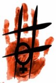

پذيرش > تریبون > مقالات > "پروانه" ی زمانه من/ الناز انصاری


 "پروانه" ی زمانه من/ الناز انصاری "پروانه" ی زمانه من/ الناز انصاری
10 آذر 1388 - - نسخه قابل چاپ
لمیده ام فیلم "در زمانه پروانه ها" را می بینم. قصه چهارخواهر میرابال که سه تایشان در مبارزه علیه دیکتاتوری دومینیکن کشته شدند. روز خشونت علیه زنان به نام این سه خواهر است که به "پروانه ها" مشهورند. پروانه ها از من دور بودند، هرچند زمانه شان همین زمانه ی ما است. زمانه ی سیاه بی پروانه نمی شد. به پروانه های زمین خودم، زمانه ی خودم فکر می کردم، پروانه یا خیلی زیاد بود یا اصلا نبود. پروانه ها یا در قامت "ندا" بودند یا بزرگ تر. پروانه زمینی تر، آشناتر می جستم در پیچ های مغزم. پروانه نداشتم تا وقتی تلفن زنگ زد و شماره خانه مادرم روی مانیتور کوچک گوشی نشست.

چه می دانستم این تماس خبر تولد هزارباره یک افسانه است. یک کابوس: «پروانه امروز از خونه اش فرار کرده. بچه هاش رو گذاشته و رفته». زیبایی اش یادم آمد و آن تسلیم کهن در رفتار و صدایش. بیش تر از همه زیبایی عجیب اش. انگار همه افسانه ها برای جاودان شدن نیاز به زن زیبایی دارند. می دانم قصه پروانه ی ما هم افسانه می شود. او زیباتر از آن است مالکان قصه ها رهایش کنند.
روزی که ازدواج کرد همه دلشان برای دختر سوخت. در خانواده فقیرش ازدواج او نهایت خوشبختی بود. همینکه سر سفره یک سهم بیشتر شود عالی بود. مهم نبود داماد کار ندارد، داماد جنون ادواری دارد و بمباران و مرگ و مجروح شدن خواهران و برادرش روان او را بهم ریخته. دختر زیبا بود و باید شوهر می کرد و این همه خوشبختی بود.
یکی دو هفته نگذشت که صدای دعواهایشان را شنیدیم. کسی شوکه نشد. تازه داماد را از بچگی می شناختیم.
پروانه حامله شد. حالا زیبایی اش قداست هم اضافه کرده بود. با شرم روزی به مادرم گفته بود نگران بچه است چون شوهرش روی شکم او می زند تا بچه بمیرد. مادرم خودش را انداخت وسط ... جزئیات یادم نیست، لابد وقتی افسانه ساخته شد جزئیات را هم می سازند. به هر حال اولین دختر به دنیا آمد.
نه من خانه آنها می رفتم و نه آنها هیچ وقت خانه من آمدند. برای آنها من نماد جهنمم. کفاره دارد دیدنم. پسر کوچکشان تا بچه بود سر عکس فوتبالیست ها شر به پا می کرد و بعدها هم بسیجی شد و رفت توی سپاه کار گرفت و دیگر سرش را توی کوچه بلند نکرد تا ببینیم قیافه اش چه شکلی شده. دختر دیگرش به خاطر اینکه همزمان با ورود آیت الله خمینی به دنیا آمده محبوب پدر است. مهمان خانه ی مادرم بود که دیدمش. از یک سفر سازمانی آمده بود و حسابی خوش گذرانده بود. ریخت و پاش های سفر حیرت زده اش کرده بود. گفته بودند پول بیت المال نیست و احمدی نژاد از جیب خودش هزینه کرده. مهربانی کودکانه ای دارد. وقتی شهر زیر بمباران بود او تا آستانه مرگ رفت. پروانه همکلاسی او بود. با هم خوب بودند تا اینکه پروانه عروسشان شد و این دختر ساده مهربان هم لاجرم نقش خواهرشوهر را پذیرفت تا برای پروانه در خانه پدرشوهر روزنه ای از دوستی باقی نماند.
مادرشان را هم دیگر نمی بینم. مثل هر مادربزرگ پیری خوش صحبت است. روزگار جوانی اش به زلف بلندش شکوفه می زد و در مهمانی های اشراف شهر تنها کسی بود که از خانه پدری اش دعوت می شد. امروز با همه دردهایش خودش را به مسجد می رساند تا نماز را به جماعت بخواند. عکس های زمان مینی ژوپ پوشی اش را سوزانده و سی سال است که زیر دامن های بلند و قطورش شلوار به پا می کند. از خانه شان بوی تشک های آویزان به نرده تراس یادم هست که یادگار جنگ بود و شب ادراری های بچه ها و بوی عطر ارزان مشهد که از سجاده های خانه می آمد. حالا سرش گرم نوه ها است.
پروانه دوباره دختری زایید. می گویند شبیه مادرش است. زن دو نوه را در خانه داشت و سرش گرمشان بود در حالی که پروانه حق نداشت به خانه پدرش برود. داماد با آنها قهر بود و مادر پروانه سوخت تا نوه هایش شش و دو ساله شدند و او برای اولین بار دیدشان. حالا اما داماد جز کتک زدن مزه "حرام" هم زیر زبانش بود. اولین بار که شنیدیم گفتند دوستانش داده اند، نفهمیده چی بود. آنقدر مشروب لابد سگ ساز خورده بود که چند روز بستری شد. بعد هم که خدا بدهد برکت به داروخانه ها. افتاد به قرص خوردن. مشت مشت یا به قول خودشان "خشاب خشاب" حالا یا نشئه ی دارو بود و آب از لک و لوچه اش می ریخت، یا خمار بود و من نمی دانم چه طور اما تن پروانه بود که هی چاق و هی کبود می شد. یک بار داماد را توی کوچه دیدم. قیافه اش عوض نشده بود، چشم هایش کاسه خون بود. عین بچگی هایش. صورت بی رمقش جلوی چشم هایم بچه شد. با همان کاسه های خون، با همان پوست چغر و زخم های صورتش. دوره اش کرده بودیم داشت از دست و پاهای قطع شده ی بچه های مدرسه می گفت. خانه شان دیوار به دیوار مدرسه ای بود که زیر بمب ماند. داماد که آن روزها بچه بود می خواست با همه رقابت کند تا ثابت کند بیشتر از همه ما خون و دست و پای جدا شده و بچه ی مرده دیده. بزرگ تر که شد همه بچه های محل از دست آزارهایش خون گریه می کردیم و خودش هر پنجشنبه پای قبر خواهر 6ساله اش خون می گریست. حالا همه آن خون ها توی چشم هایش بود و وای اگر آنهمه خون را می خواست روی پروانه بریزد.
یادم نرود آن یکی دختر خانه را. ازدواج که کرد پای ما و بقیه همسایه ها هم از خانه شان قطع شد. شب عروسی شان بود که داماد شر به پا کرد و از آن روز همه اهل محل شدند کافر و بی بندوبار و نجس. اگر این خانواده در عروسی ها می آمدند به احترامشان برنامه هر چه بود قطع می شد. یک مبارکی می گفتند و کامی شیرین می کردند و می رفتند و این رسم سال ها بود تا داماد تازه آمد. افسانه دختر کمی قبل از افسانه پروانه شروع شد. او را اما در قصه جا نخواهند داد. دختر زشت بود، حالا هم که می سوزد و می سازد و بهانه های ساده ی خوشبختی اش را پیدا کرده. هر کتک اش با یک تکه طلا جبران می شود. پروانه جور او را هم در قصه ها خواهد کشید. اولین بچه اش زیر کتک و در شکمش مرد و دومی که دنیا آمد پیرزن سوخت تا نوه اش را وقتی دو ساله بود برای بار اول دید. چه چرخه ی عادلی!
صدای پشت خط می گوید: «کاش پیداش نکنن، می کشن اش، ولی ساده است. هیچی بلد نیست. می خواد چی کار کنه؟ با کی رفته؟» پروانه را در یک عکس به یاد می آورم. عروسی اش بود. لباس اش هرچقدر فقیرانه بود، آرایشش هرچقدر ناشیانه و دستپخت زنان فامیل، زیبایش دل همه مان را می سوزاند. حالا 9ساعت است گم شده.
قصه از اینجا شروع شد که دختری در خانه ای دنیا آمد که بابا نان نداشت. دختر بزرگ شد و هی زیباتر. رفت مدرسه تا دبیرستان درس خواند. همکلاسی اش زشت بود اما خانه داشتند، غذا داشتند و ایمانی بزرگ تر و برادری که فکر می کردند جنون اش مال مجرد بودنش است. عروس شد اما نه مثل همه ی افسانه ها. داماد نه اسب سفید داشت، نه شاهزاده بود، نه ثروت داشت و نه حتی سالم بود. سهم پروانه از افسانه ها فقط زیبایی اش شد و حالا قصه ادامه دارد. سال ها که بگذرد شوهرش هم بر اسب شاهزاده می نشیند تا مبادا به حیثیت مردی در قصه ها ظلمی روا شود. حالا کجای شب مانده دختری که هیچ کس به او اجازه نداد تا سی سالگی اش یک روز را برای خودش باشد. دو دخترش را گذاشته در خانه. "چه مادر بی رحمی". کجاست پروانه در زمانه ای که نه حق طلاق داشت و نه حتی اگر طلاق می گرفت خانواده اش پناهش می دادند. کجاست دختری که حق کار نداشت، گیرم که سرپرست اش هم به مشتی ارزن نمی ارزید. کجا می خوابد امشب دختری که تمکین نکرده، که فرار کرده، مهدورالدم شده. خونش حلال شده امشب.
بهتر که بچه هایت را گذاشتی و رفتی پروانه. اگر هم می خواستی شان حق تو نبودند. حتما دانسته بودی نمی توانی اعتیاد شوهرت را ثابت کنی. حتما دانسته بودی پدرشوهرت نمی گذارد اعتبارش را تو در دادگاه خانواده له کنی. پروانه! پروانه ی زمانه ی من! پلیس دنبالت می گردد. حالا اسم ات در لیست همه بیمارستان های شهر است. سی سال زنده بودی و جز همین امشب هیچ کس نگران تو نبود. حالا هم بیشتر نگران اینند که زنده باشی. خانه امنی در کار نیست. تو که با هر سلام هم سرخ می شدی از خجالت، حالا کجایی. خانه ی امن کجاست. پروانه تا زنده ای افسانه ساخته نشده، قصه هنوز تمام نشده. نگذار این قصه تمام شود. هزار سال زنده بمان تا وقتی خواهرانت دنیای بهتری بسازند و تو آخرین پروانه فراری این زمانه شوی. زنده بمان پروانه. تاریخ بی قراری زنان پروانه به حد کفایت دارد. تو دیگر زنده بمان. نگذار افسانه شوی. هزار سال زنده بمان پروانه ی فراری زمانه نابرابر ما.
ارسال به
بالاترین
،
توییتر
،
فریندفید
،
فیسبوک
در همين بخش :
 دهمین دورۀ مراسم تندیس صدیقه دولت آبادی ۱۳۹۲ دهمین دورۀ مراسم تندیس صدیقه دولت آبادی ۱۳۹۲
کارت پستالهایی به بهانهی هشت مارس و به یاد همهی مبارزین راه برابری
بیانیه بیش از 350 تن از مدافعان حقوق زنان به مناسبت روز جهانی زن؛ زنان هر روز فرودستتر میشوند
لباسی که برای تن ما دوخته اند! /اعظم بهرامی
چالشها و چشمانداز فعالیت مدنی زنان
ديگر بخش ها :
طرح یک میلیون امضا
|
مقالات
|
سایت نوشته ها
|
اخبار
|
گزارش كمپين
|
گفت و گو
|
علیه سکوت
|
كوچه به كوچه
|
نامه های شما
|
گزارش ویژه
|
گفتگو با اعضا
|
ویژه سالگرد کمپین
|
تصویر برابری
|
دل آرام علی
|
تریبون
|
مقالات
|
تاریخ شفاهی
|
خارج از چارچوب
|
کتابخانه
|
درباره کمپین
|
کمپین در شهرها
|
کمپین در بند
|
صدای تغییر
|
ویژه 22 خرداد
|
لایحه حمایت از خانواده
|
گالری
|
عشا مومنی
|
امیر یعقوبعلی
|
خدیجه مقدم
|
راحله عسگری زاده و نسیم خسروی
|
پروین اردلان،جلوه جواهری، مریم حسین خواه، ناهید کشاورز
|
زینب پیغمبرزاده
|
سعیده امین، سارا ایمانیان، محبوبه حسین زاده، ناهید کشاورز و همایون نامی
|
احترام شادفر
|
نسیم سرابندی زاده،فاطمه دهدشتی
|
وبلاگ مهمان
|
پرونده خرم آباد
|
دستگیری ها
|
مریم مالک
|
پرستو اللهیاری
|
مهرنوش اعتمادی
|
سمیه رشیدی
|
Other Languages
|
همراهان
|
«فراخوان کمپین ده روز با بهاره هدایت»
| English
|